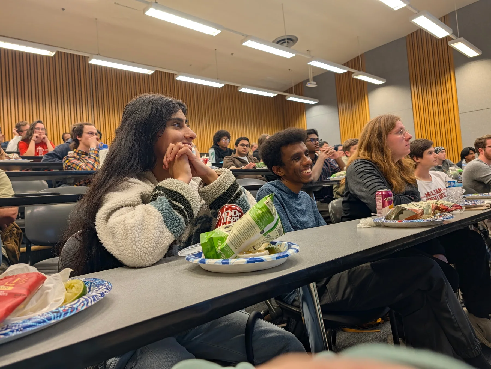
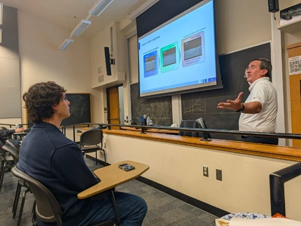
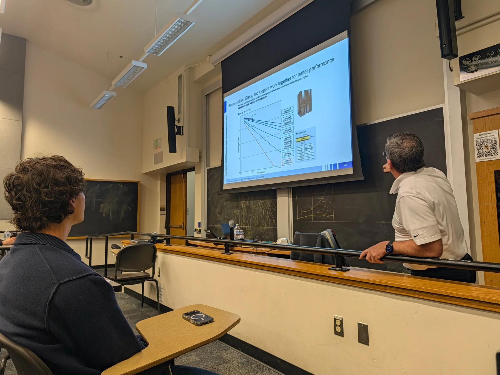
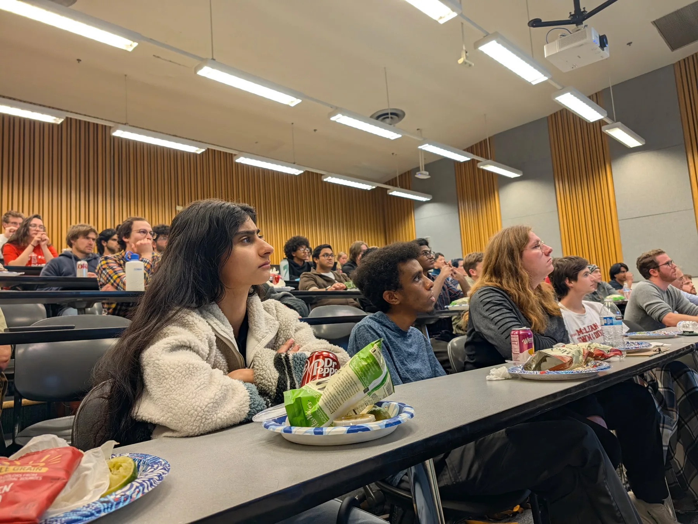
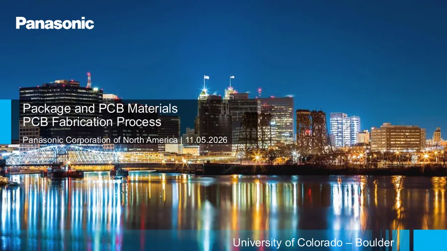

How PCBs are built
From laminate, glass, resin, and copper through drilling, plating, etching, and multilayer lamination.
November 5, 2026 · Panasonic Electronic Materials
Darren Hitchcock · Panasonic Electronic Materials
Talk abstract
Printed circuit boards are often viewed simply as the platform that connects electronic components, but as systems become faster and more complex, the PCB itself becomes a critical part of the electrical design.
This talk begins with the basics of PCB construction and manufacturing, using familiar two-layer boards to introduce copper, laminates, drilling, plating, and etching. From there, it builds toward the multilayer boards used in modern computers and high-performance servers, where layer count, vias, materials, and fabrication become much more challenging. The discussion explores how higher data rates increase dielectric and conductor loss, driving the need for lower-loss laminates, smoother copper, more advanced via structures, and tighter manufacturing controls.
The goal is to give attendees a practical understanding of how electrical performance, manufacturability, reliability, and cost come together in modern PCB design.
What the talk covered
From laminate, glass, resin, and copper through drilling, plating, etching, and multilayer lamination.
Why dielectric loss, conductor loss, copper roughness, and material selection become critical at high data rates.
How electrical performance, manufacturing yield, reliability, mechanical constraints, and cost must be balanced together.
Event archive
Darren Hitchcock of Panasonic Electronic Materials took the audience from the basic ingredients of a PCB laminate through two-layer fabrication and multilayer construction, then into the challenges of 20-, 30-, 40-, and 50-layer boards. The talk connected higher data rates to dielectric and conductor loss, lower-Dk/Df materials, smoother copper, advanced via structures, manufacturing yield, reliability, and cost.





Presentation from Darren Hitchcock · Panasonic Electronic Materials · November 5, 2026.
View presentation PDF ↗Watch the November 5, 2026 presentation by Darren Hitchcock of Panasonic Electronic Materials.
Watch on YouTube ↗Full event recording · Front Range Professional Speaker Series · CU Boulder